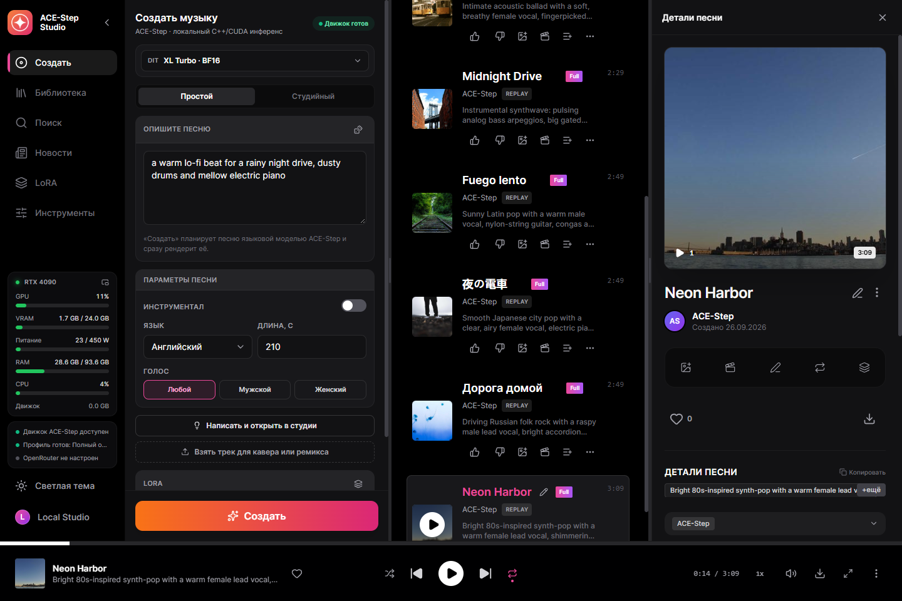
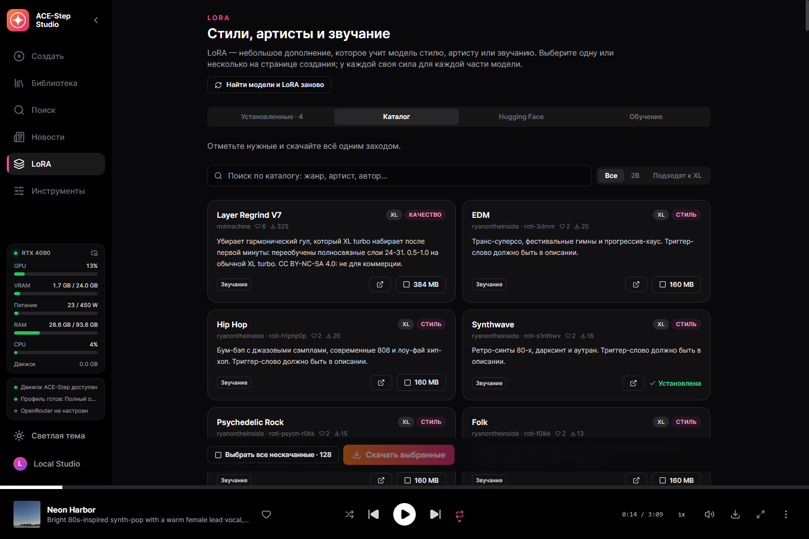
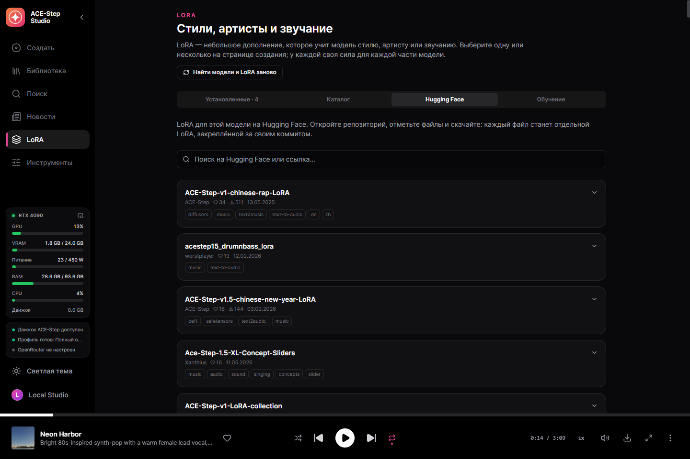
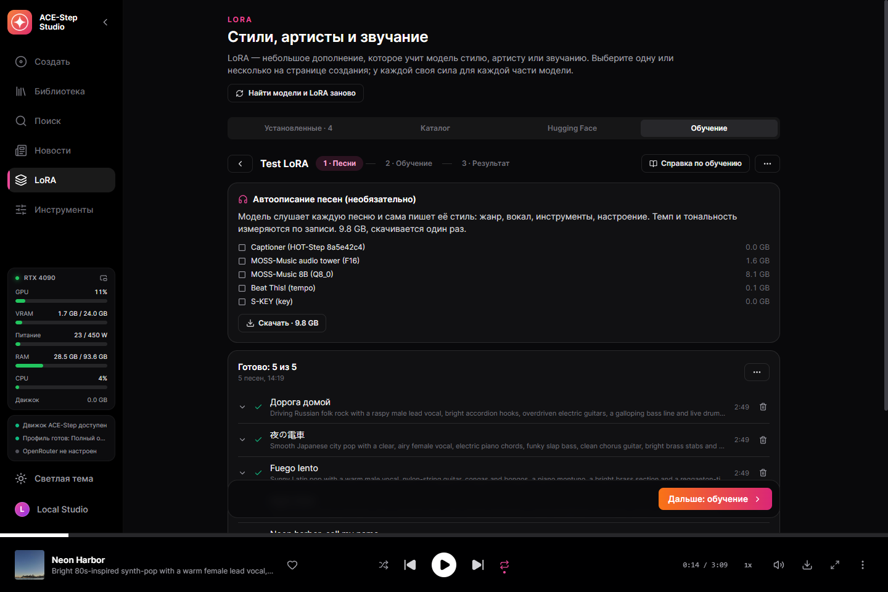
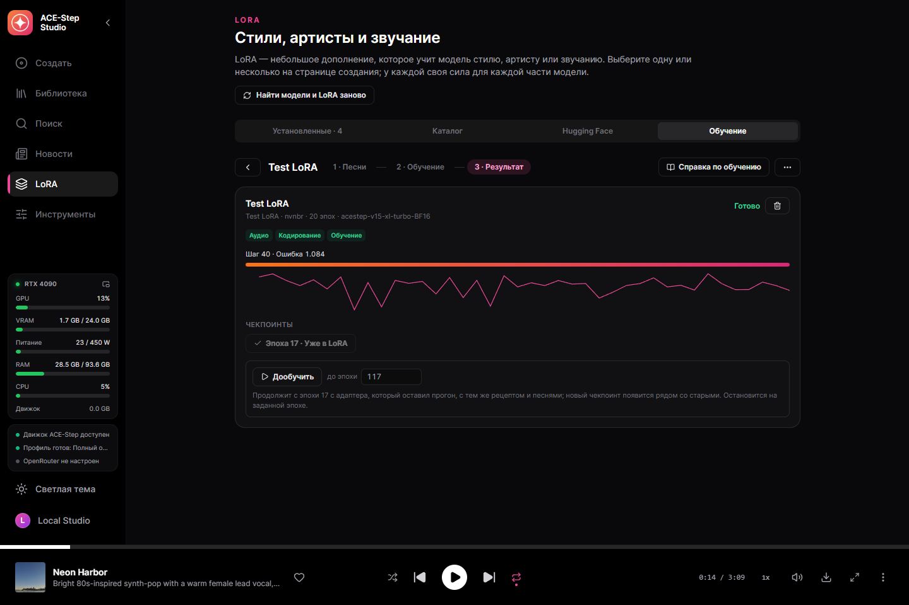
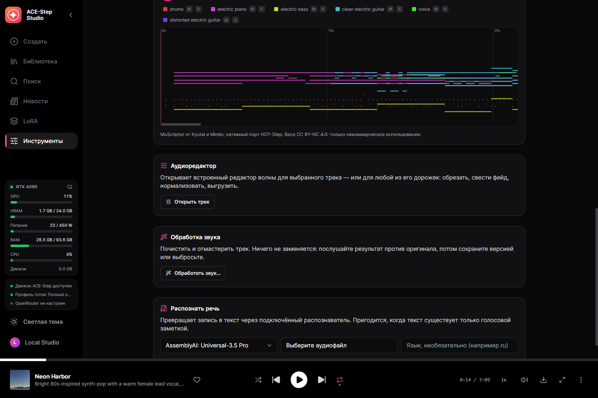
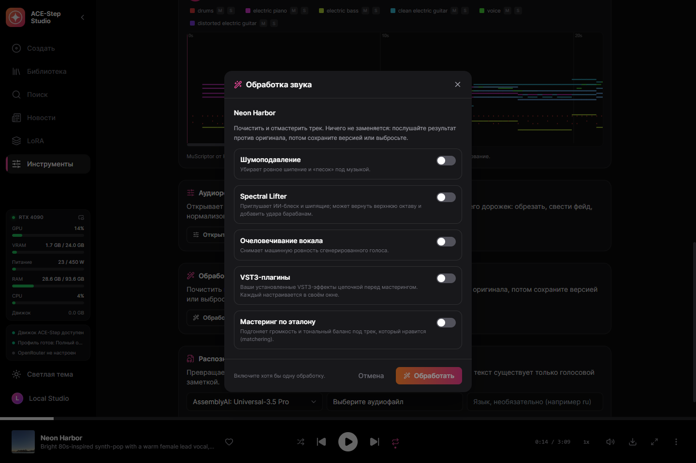
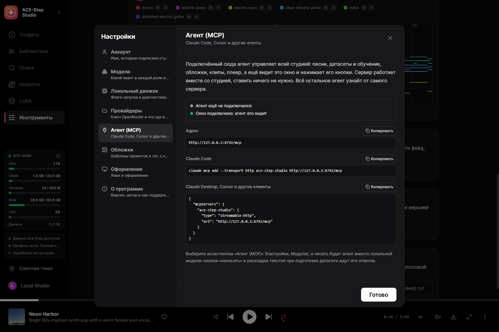
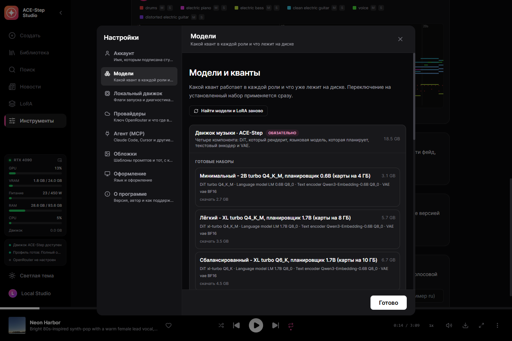

Целые песни с вокалом на своей видеокарте
Десктопная студия для ACE-Step 1.5 — открытой модели, которая пишет и поёт целые песни. Опишите звучание и напишите текст — или дайте одну строку, — модель спланирует песню своей языковой моделью и споёт её на вашей видеокарте. Один exe на нативном C++ движке acestep.cpp — без Python и лаунчеров.
Windows 10/11 x64 и видеокарта NVIDIA с 4 ГБ видеопамяти и больше (GTX 900 и новее). Модели скачиваются из самой студии, когда вы решите.
Что умеет
Всё ниже работает на вашем компьютере, пока вы сами не подключите облачный ключ.
Целые песни
До десяти минут по описанию и тексту. Планировщик ACE-Step дописывает, что вы оставили пустым — темп, тональность, длину, даже текст, — и планирует структуру до того, как DiT её отрендерит.
Песня из одной строки
Простая форма: на входе идея, на выходе готовая песня. Пишет её ассистент или планировщик ACE-Step — никогда оба сразу.
Все модели ACE-Step
DiT 2B и XL — turbo, SFT, base, мерджи, дообучения сообщества — от Q4 до BF16, переключаются над формой создания. Планировщики 0.6B, 1.7B и 4B.
Каверы, ремиксы, перерисовка
Отрендерить трек из библиотеки в новом стиле, сделать ремикс, перерисовать кусок или с base-моделью вынуть, добавить и дописать стемы.
Точный повтор
Каждый трек хранит запрос и аудиокоды: отрендерить заново один в один или с другими шагами, новым сидом, несколькими дублями.
200 готовых примеров
Родные примеры запросов ACE-Step, загружаются одним кликом.
Помощник по текстам
Локальная Gemma, OpenRouter или ваш агент пишет описание и текст по идее по официальным правилам ACE-Step.
Каталог LoRA
131 LoRA с Hugging Face, отобранная по лайкам и скачиваниям, с описаниями и авторами, и поиск по всему Hugging Face — каждый файл проверяется на размер модели до скачивания.
Своя LoRA
Песни одного артиста или стиля превращаются в LoRA на вашей видеокарте — тренером HOT-Step по его рецепту LoKR. Каждую настройку можно поменять, чекпоинт уходит в библиотеку LoRA одним кликом.
Датасет одним перетаскиванием
Бросьте папку: тексты дословно берутся из баз, которыми пользуются плееры, Whisper слушает только то, чего там нет, MOSS-Music слушает и описывает каждую песню. После перезапуска работа продолжается с того же места.
Караоке по словам
Расширенный LRC с меткой времени на каждом слове, выравнивание Parakeet или Whisper.
Стемы и MIDI
Шесть стемов HT-Demucs; любой трек в многодорожечный MIDI моделью MuScriptor, пианоролл звучит вместе с оригиналом.
Обработка звука
Шумоподавление, Spectral Lifter, очеловечивание вокала, ваши VST3-плагины и мастеринг по эталону.
Управление агентом (MCP)
Подключите Claude Code, Claude Desktop или Cursor — агент делает всё, что умеет студия (163 инструмента), видит окно и нажимает кнопки. Правила письма ACE-Step идут в комплекте, песни агент пишет сам.
Примеры
Сделаны на чистой установке релизной сборки, как их сохранила студия.
Скриншоты
Сама студия — на этом языке.









Модели
Рабочий набор — это DiT, планировщик, текстовый энкодер и VAE, всё в GGUF.
| Ваша видеокарта | Набор | Скачать |
|---|---|---|
| 24 GB | Полный оригинал — XL turbo BF16, планировщик 4B BF16 | 18.5 GB |
| 13 GB+ | Качество — XL turbo Q8_0, планировщик 4B Q8_0 | 10.1 GB |
| 10 GB+ | Баланс — XL turbo Q6_K, планировщик 1.7B | 6.7 GB |
| 8 GB+ | Лёгкий — XL turbo Q4_K_M, планировщик 1.7B | 5.7 GB |
| 4 GB+ | Минимальный — 2B turbo Q4_K_M, планировщик 0.6B | 3.1 GB |
Студия сама предложит набор, который потянет ваша видеокарта, но скачивать решаете вы. Каждый файл сверяется по SHA-256 с закреплённой ревизией на Hugging Face, прерванная загрузка докачивается.
Как начать
- Установите — запустите установщик или распакуйте портативный архив куда угодно.
- Выберите набор — первый экран сам предложит то, что потянет видеокарта; скачается только недостающее.
- Напишите — описание и текст, возьмите пример или дайте одну строку в простой форме.
- Создайте — движок запустится сам, песня появится в библиотеке.
Что где работает
По умолчанию всё локально. Облачный ключ добавляете вы — для той возможности, которую выберете.
| Часть | Где работает | Размер |
|---|---|---|
| Движок ACE-Step (acestep.cpp) | Ваша видеокарта: CUDA, Vulkan или процессор | в комплекте |
| Набор моделей ACE-Step | Ваша видеокарта | 3,1–18,5 ГБ |
| NVIDIA cuBLAS | Только видеокарты NVIDIA | 391 МБ, один раз |
| Тайминги караоке — Parakeet или Whisper | Ваш компьютер | по желанию |
| Разделение на стемы — HT-Demucs | Ваша видеокарта или процессор | по желанию |
| Помощник по текстам | Локальная Gemma или OpenRouter | по желанию |
| Тренер LoRA — HOT-Step ace-train | Видеокарта NVIDIA RTX | 0,1 ГБ + DiT в BF16, по желанию |
| Описание песен на слух — MOSS-Music-8B | около 12 ГБ видеопамяти | 9,8 ГБ, по желанию |
| Аудио в MIDI — MuScriptor (HOT-Step ace-midi) | NVIDIA GTX 16 / RTX 20 и новее | 0,5–5,6 ГБ, по желанию |
| Хост VST3 — HOT-Step | Ваш компьютер, отдельный процесс | в комплекте |
Как устроено
Сервис вшит в десктопный exe и следит за C++ движком. Готовые песни импортирует сам сервис, поэтому результат не теряется, даже если окно перезагрузили или закрыли.
React UI ─┐
├─ ACE-Step-Studio.exe (Tauri window + Rust/Axum service)
Rust axum ┘ │
└─ acestep.cpp `ace-server` (C++/GGML, GGUF)
Приватность
Ваша музыка ваша и остаётся на вашем диске.
Без аккаунта
Регистрироваться негде и незачем.
Без телеметрии
Студия не сообщает, что вы генерируете.
Облако — только по желанию
Ничего не уходит с компьютера, пока вы не добавите ключ, и тогда только для этой возможности.
Кто сделал
Nerual Dreming — художник, основатель ArtGeneration.me и сообщества «Нейро-Картель», автор YuE2 Studio и MiniMax Music3 Studio — той же студии для других музыкальных моделей.